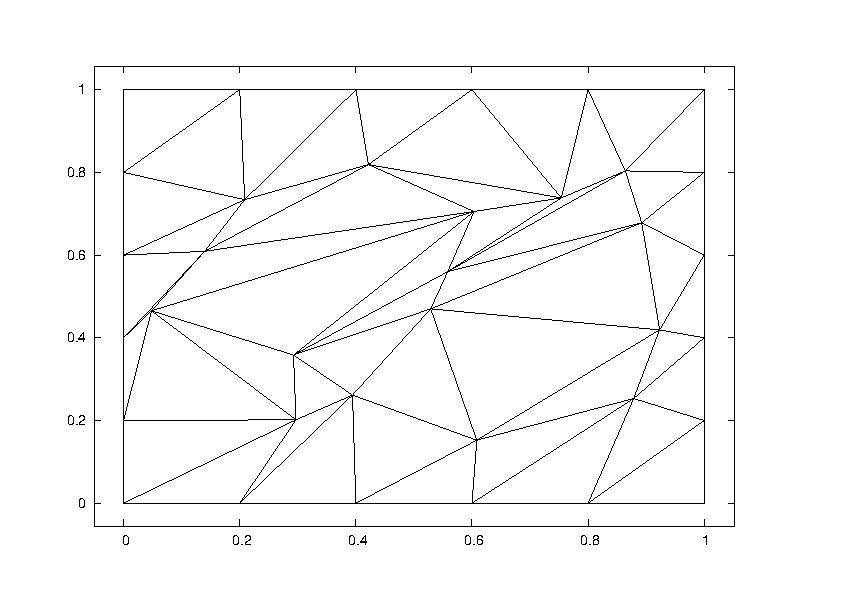
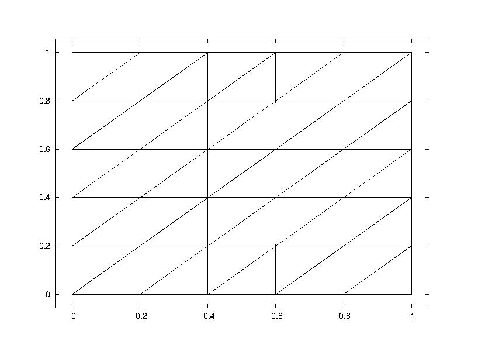
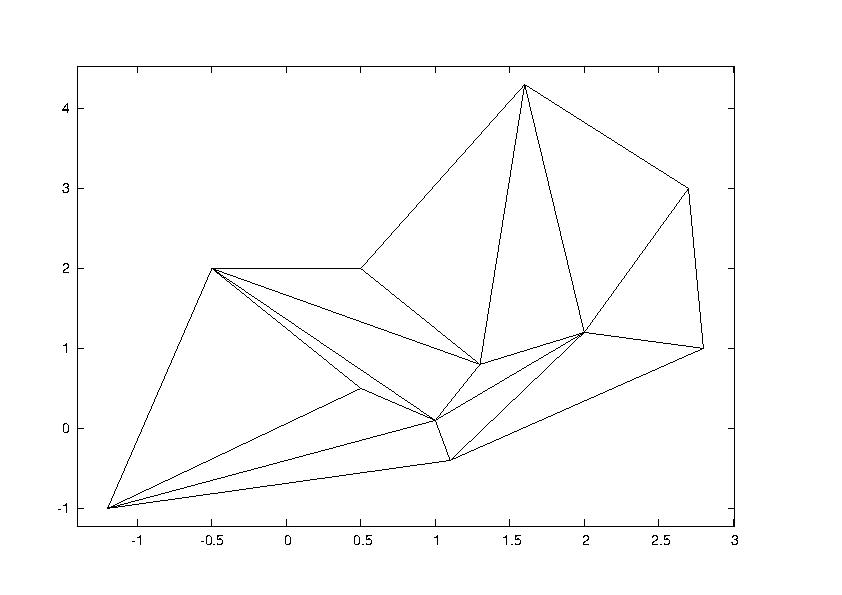
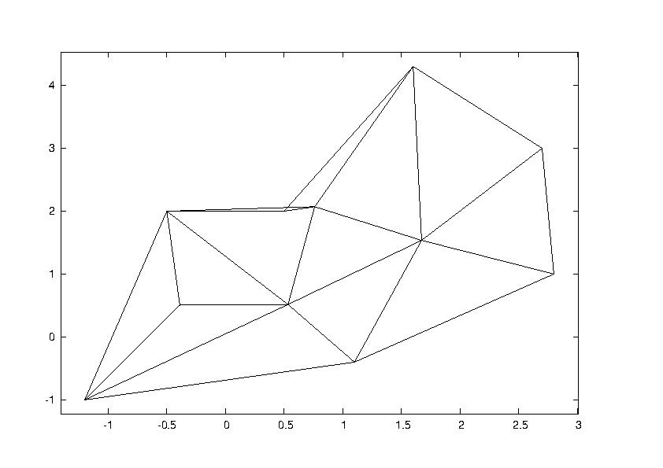
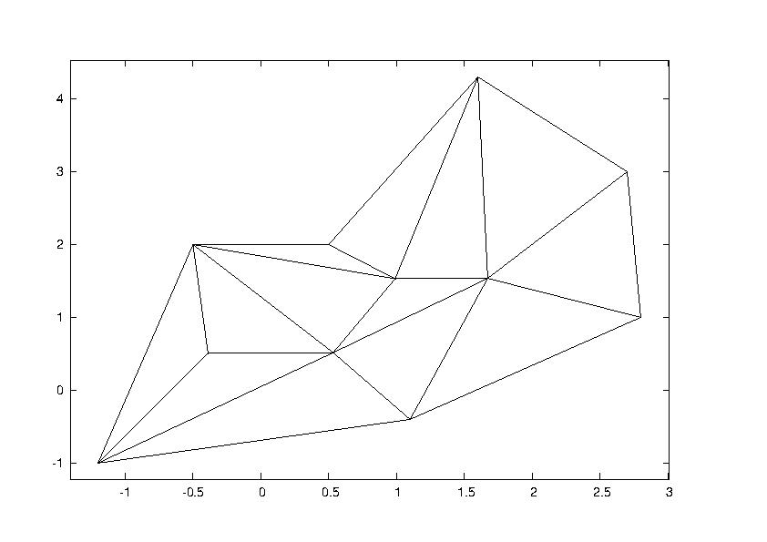

Mesh improvement and manipulation (Kedl, Pieber)
Summary
A mesh of triangles shall be read from a binary file.
The
quality of this mesh is established by computing the ratio radius of
incircle : radius of circumcircle for the individual
triangles.Subsequently an attempt is made to improve mesh quality.
Eventually the improved mesh is written to a file again.
Approach
- Structure of input file
The mesh is read from a binary file, which has to have the following
structure:
| position |
content |
data type |
size |
| 1 |
number of vertices |
uint32_t |
sizeof(uint32_t) |
| 2 |
x-coordinates of vertices |
double |
sizeof(double)*number of vertices |
| 3 |
y-coordinates of vertices |
double |
sizeof(double)*number of vertices |
| 4 |
number of triangles |
uint 32_t |
sizeof(uint32_t) |
| 5 |
triangles (defined by the corresponding vertices,
respectively 3 per triangle) |
uint32_t |
3*sizeof(uint32_t)*number of triangles |
- Determinig mesh quality
Mesh quality is tested by computing
the ratio radius of incircle :
radius of circumcircle for each triangle. The ideal value
would be 1 : 2 and would
be obtained oif the triangle was equilateral. To assess mesh
quality the average value as well as the worst value for an
individual triangle is calculated as the average value on its own
does not always deliver significant information on the mesh's
improvement. Take the following mesh for example. Before mesh
improvement (right picture) the average value is at
1 : 3.1447 and for the improved mesh (left picture) it is
at 1 : 2.94253
- if you're looking just at the numbers and don't have a
picture to go by this does not seem to be much of an improvement.
However, if you have the additional information that for the
original mesh the worst value for the ratio radius
of incircle : radius of circumcircle is 1
: 19.2571 while for the improved mesh it is 1
: 2.92707 it is much easier to get an idea of how much
the mesh has changed.
| before
manipulation |
after
manipulation |
|  |

|
- Mesh improvement
Algorithm:
The x coordinates of the vertices
are given by
. In the first step of the algorithm the new x-coordinates
are then calculated
by the formula
where
,
and
... for boundary
vertices,
This leaves us with the following system of linear equations:
which can be written as
where M_lhs is a lower
triangular matrix where each entry on the diagonal is 1 and M_rhs is
an upper triangular Matrix for which the diagonal entry
is given by 1, if the
vertex
is a boundary vertex and
by 0 else.
This system of equations is then solved using the Gauss-Seidel-Method
and yields the x-coordinates for the improved mesh. The procedure for
the y-coordinates is exactly the same.
This process then is repeated until either the maximum number of
allowed iterations is surpassed, or the vertices barely move at all
during one iteration.
- Special Cases
In certain cases the algorithm described in the previous paragraph
won't work. Take for example the following mesh:
| original mesh |
base algorithm |
adjusted algorithm |

|

|
 |
It is clearly visible that if the algorithm is executed without any
adjustments some of the triangles flip over (as can be seen in the
second picture), thus changing the topology of the mesh. (For larger
picture see mesh_err.svg
)Therefore some adjustments to the base algorithm have to be made.
If none of the elements filp over the algorithm does not have to be
changed. If however, during one step of the algorithm one or more of
the elements flip over the shifting of the respective vertex has to
be altered. Yet if the vertex is just moved back to a point, scarce
before the element flips over this will leave us with some quite
'narrow' triangles, thus deterioirating mesh quality rather than
improving it. Therefore it will be calculated, how far the vertex
may be moved in one direction without elements flipping over, then
the exactly same will be done for the opposite direction. Then the
vertex will be moved just to the middle of the distance between
these extremes.
-